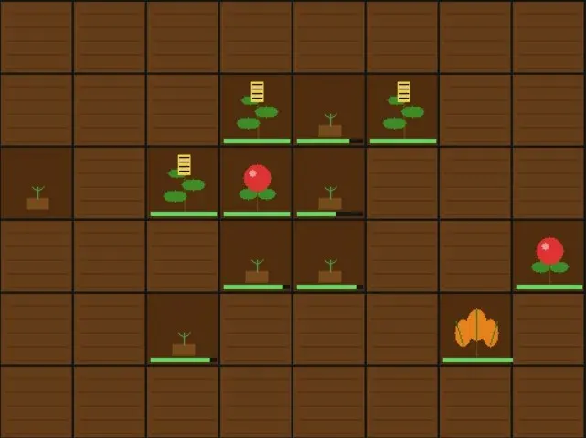

Game development
Seed Breeder
A Farming game built with SDL2 and C
- Language
- C
- Libraries
- SDL2, SDL2_ttf
- Platform
- Windows (MSYS2 UCRT64 toolchain)
- Editor
- VS Code
- Terminal
- Git Bash
- Status
- Complete (v1.0)

§Table of Contents
- Project Overview
- Development Environment Setup
- Architecture Overview
- File Structure
- Data Structures
- Game Systems
- Rendering Pipeline
- Input System
- Save & Load System
- Build Instructions
- Design Decisions & Rationale
- Development Phases
- C Concepts Learned
- Known Limitations & Future Ideas
§Project Overview
A 2D farming simulation game built from scratch in C using SDL2. The player manages a 10×8 grid of farmland, planting seeds, watering crops, and harvesting produce to sell for money. A Breeding System allows adjacent grown crops to produce hybrid plant varieties with unique names, colors, and stats.
The project was built as a learning exercise in C — covering Pointers, Structs, Enums, manual memory management (Stack vs Heap), multi-file architecture, and manual compilation.
Core gameplay loop:
- Plant seeds on empty tiles
- Switch to watering mode and water planted tiles
- Advance the day (Next Day button or right-click)
- Harvest grown crops
- Sell crops in the Shop System, buy new seed types
- Breed adjacent crops to discover hybrid plants
§Development Environment Setup
§Toolchain
- Compiler: GCC 15.2.0 (MSYS2 UCRT64)
- Package manager: MSYS2 pacman
- Environment: UCRT64 (chosen over MinGW64 for modern Windows compatibility — see Design Decisions & Rationale)
§Installation Steps
1. Install MSYS2 from https://www.msys2.org
2. Open MSYS2 UCRT64 terminal
3. pacman -Syu # update package database
4. pacman -S mingw-w64-ucrt-x86_64-gcc # install GCC
5. pacman -S mingw-w64-ucrt-x86_64-SDL2 # install SDL2
6. pacman -S mingw-w64-ucrt-x86_64-SDL2_ttf # install SDL2_ttf
7. Add C:\msys64\ucrt64\bin to Windows PATH
8. Configure VS Code to use Git Bash as terminal
9. Add C:/msys64/ucrt64/include to IntelliSense includePath
§Key Issue Resolved
An early issue arose from mixing MinGW64 and UCRT64 environments — SDL2 was installed under MinGW64 but GCC was from UCRT64. These are entirely separate environments that do not share libraries. Resolution: install all packages exclusively under UCRT64.
§Architecture Overview
The game follows a classic game loop pattern:
LOOP forever:
1. Handle Input → poll SDL event queue
2. Update State → state changes happen inside input handlers
3. Draw → clear → draw tiles → draw UI → present
Data flows in one direction only:
main.c
└── owns Farm (on the stack)
└── Farm contains Tiles[8][10]
└── Farm contains PlantTypes[64]
└── Farm contains seed_inventory[64]
└── Farm contains crop_inventory[64]
tile.c knows nothing about Farm or SDL. farm.c knows about Tile and SDL but not main.c. main.c owns everything and drives the loop.
See also: File Structure, Data Structures
§File Structure
FarmingGame/
├── src/
│ ├── main.c — entry point, game loop, SDL init/cleanup
│ ├── tile.h — PlantType, TileState, Tile struct definitions
│ ├── tile.c — tile_init, tile_plant, tile_water, tile_update
│ ├── farm.h — Farm struct definition, all function declarations
│ └── farm.c — all game logic, rendering, input, save/load
├── assets/
│ └── arial.ttf — font used for all in-game text
└── farming_game.exe — compiled output
§Header vs Source Files
| File type | Purpose |
|---|---|
.h header |
Declares that things exist — like a table of contents |
.c source |
Defines what things actually do |
Other .c files #include a .h to know what they can use. Header guards (#ifndef / #define / #endif) prevent double-inclusion errors.
§Data Structures
§PlantType
Defined in tile.h. Describes the identity of a seed/crop variety.
typedef struct {
char name[32]; // display name (e.g. "Wheat", "Tomato", "Whmato")
int r, g, b; // RGB color shown when grown
int growth_rate; // growth added per watered day
int sell_price; // money earned when crop is sold
int id; // unique index in farm->plant_types[]
} PlantType;
See also: Breeding System, Shop System
§TileState
Defined in tile.h. An enum representing the four states a tile can be in.
typedef enum {
TILE_EMPTY, // 0 — bare soil
TILE_PLANTED, // 1 — seed in ground, needs water
TILE_WATERED, // 2 — watered, will grow on next day
TILE_GROWN, // 3 — ready to harvest
} TileState;
See also: Enums, Tile System
§Tile
Defined in tile.h. Represents one square on the farm grid.
typedef struct {
TileState state;
int growth; // 0–100
int watered; // 1 if watered today
int water_count; // total waterings
int plant_type_id; // index into farm->plant_types[] (-1 = empty)
int bred; // 1 if this tile has already triggered breeding
} Tile;
See also: Tile System, Breeding System
§Farm
Defined in farm.h. The central game state struct — everything lives here.
typedef struct {
Tile tiles[GRID_ROWS][GRID_COLS]; // 8×10 tile grid
PlantType plant_types[MAX_PLANT_TYPES]; // up to 64 plant varieties
int plant_type_count;
int seed_inventory[MAX_PLANT_TYPES]; // seeds available to plant
int crop_inventory[MAX_PLANT_TYPES]; // harvested crops to sell
int selected_seed;
int watering_mode; // 0=plant mode, 1=water mode
int shop_open; // 0=farm view, 1=shop view
int money;
int day;
} Farm;
Constants:
| Constant | Value | Meaning |
|---|---|---|
GRID_COLS |
10 | Grid width in tiles |
GRID_ROWS |
8 | Grid height in tiles |
TILE_SIZE |
64 | Pixels per tile |
MAX_PLANT_TYPES |
64 | Max plant varieties |
§Game Systems
§Tile System
Implemented in tile.c. Four functions manage individual tile state:
| Function | Behaviour |
|---|---|
tile_init |
Resets tile to empty, clears all fields |
tile_plant(tile, id) |
Sets state to PLANTED, stores plant_type_id |
tile_water(tile) |
Sets state to WATERED, increments water_count |
tile_update(tile, rate) |
If watered: adds growth_rate to growth, resets to PLANTED. If growth ≥ 100: sets GROWN |
§Farm Logic
Implemented in farm.c.
farm_update — called when Next Day is pressed or right-clicked:
- Increments
farm->day - For each tile: looks up its PlantType growth_rate, calls
tile_update - Detects the moment a tile transitions to
TILE_GROWN - If newly grown and
bred == 0: callsfarm_try_breedonce, setsbred = 1
farm_harvest — called when clicking a grown tile in normal mode:
- Gives player
1–4seeds of that type (random) - Gives player
2–5crops of that type (random) - Resets tile to empty
See also: Breeding System, Input System
§Breeding System
Triggered exactly once per tile at the moment it becomes fully grown. See Farm Logic for when it fires.
For each of the 4 neighbours:
If neighbour is TILE_GROWN AND a different plant type:
Roll rand() % 100
If < 20 (20% chance):
Create hybrid PlantType
Register in farm->plant_types[]
Add 1 seed to seed_inventory
Stop (one breed per tile maximum)
Hybrid name generation:
child.name = first half of parent A's name
+ second half of parent B's name
Example: "Wheat" + "Tomato" → "Wh" + "mato" → "Whmato"
Hybrid stats:
- Color: average of both parents' RGB values
- Growth rate: average of both parents' growth rates
- Sell price: average + 5 bonus
Duplicate prevention: farm_add_plant_type uses strcmp to check if a plant with that name already exists. If it does, its index is returned and the seed count for that type is simply incremented.
See also: PlantType, Tile, Binary Serialization
§Shop System
The shop replaces the entire screen when open (farm->shop_open = 1).
Sell side (left): Lists all crop types with quantity > 0. Clicking SELL sells all crops of that type at once for quantity × sell_price.
Buy side (right): Lists all known plant types with their buy price (sell_price × 2). Button is greyed out if the player can't afford it.
Starter plants:
| Plant | Color | Growth Rate | Sell Price | Buy Price | Available at start |
|---|---|---|---|---|---|
| Wheat | Golden yellow | 25/day | $20 | $40 | |
| Tomato | Red | 20/day | $30 | $60 | |
| Carrot | Orange | 30/day | $25 | $50 | |
| Blueberry | Blue | 15/day | $40 | $80 | Shop only |
| Pumpkin | Dark orange | 20/day | $35 | $70 | Shop only |
| Corn | Yellow | 30/day | $22 | $44 | Shop only |
See also: Input System, Architecture Overview
§Rendering Pipeline
Every frame follows this exact order:
SDL_RenderClear — fill screen with dark background
farm_draw — draw tile grid
farm_draw_ui — draw right side panel
farm_draw_actionbar — draw bottom button strip
farm_draw_tooltip — draw hover tooltip on top of everything
SDL_RenderPresent — swap back buffer to screen
SDL uses double buffering — all drawing happens on a hidden back buffer. SDL_RenderPresent swaps it to the visible screen all at once, preventing flickering.
§Tile Visuals
Each tile state has distinct visuals drawn entirely with SDL primitives (no image files):
| State | Visual |
|---|---|
| TILE_EMPTY | Brown soil with horizontal furrow lines |
| TILE_PLANTED | Darker soil with a small mound and tiny sprout |
| TILE_WATERED | Wet dark soil with blue droplet circles |
| TILE_GROWN | Full plant shape — see visual types below |
Visual types for grown plants:
- Type 0 — Round fruit (Tomato, Blueberry): stem + two leaves + colored circle with highlight
- Type 1 — Leafy (Carrot, Pumpkin): stem + three fanning leaves + vein lines
- Type 2 — Tall stalk (Wheat, Corn): double-line stalk + alternating leaves + grain head
Visual type is determined by the first letter of the plant name, so hybrids automatically inherit a shape. See Circle Drawing Algorithm and Breeding System.
§Circle Drawing Algorithm
SDL has no built-in circle function. Circles are drawn using the midpoint algorithm:
For each row dy from -radius to +radius:
dx = √(radius² - dy²) ← Pythagoras
Draw horizontal line from (cx-dx, cy+dy) to (cx+dx, cy+dy)
Stacking these lines produces a filled circle. See Tile Visuals.
§Text Rendering
Uses SDL2_ttf. Text rendering is a two-step process:
TTF_RenderText_Solid→ creates anSDL_Surface(pixels in RAM)SDL_CreateTextureFromSurface→ uploads to GPU asSDL_TextureSDL_RenderCopy→ draws texture to screen- Free both surface and texture immediately after use
See also: Stack vs Heap
§Growth Progress Bar
Each planted tile shows a small bar at the bottom:
bar_width = (growth × max_bar_width) / 100
Integer math maps 0–100 growth to 0–58 pixels.
§Input System
All mouse clicks route through farm_handle_click (or farm_handle_shop_click when the shop is open).
Click routing:
if shop is open → farm_handle_shop_click
else if y >= 512 → action bar button check
else if within grid → tile interaction
Normal mode (watering_mode = 0):
- Click EMPTY tile → plant selected seed
- Click GROWN tile → harvest
Watering mode (watering_mode = 1):
- Click PLANTED or WATERED tile → water it
Right-click: Always advances the day.
Scroll wheel: Cycles through seed types. Wraps circularly.
S key: Save game.
Action bar buttons:
| Button | X Range | Action |
|---|---|---|
| Save | 10–140 | Write savegame.bin |
| Next Day | 150–280 | Advance day |
| Water ON/OFF | 290–420 | Toggle watering mode |
| Shop | 430–560 | Open Shop System |
Hover tooltip: SDL_GetMouseState is called every frame. If hovering over a non-empty tile, a popup shows plant name, growth %, and state. Position clamps to screen edges.
See also: Farm Logic, Rendering Pipeline
§Save & Load System
The entire Farm struct is written to disk as raw binary:
fwrite(farm, sizeof(Farm), 1, file); // save
fread(farm, sizeof(Farm), 1, file); // load
sizeof(Farm) asks the compiler exactly how many bytes the struct occupies. Since Farm contains no pointers — only fixed-size arrays and integers — the raw bytes are fully portable between save and load.
Save file: savegame.bin in the game's working directory.
Save triggers: S key, or the Save button.
Load trigger: Automatically on startup.
⚠️ If the
Farmstruct definition changes, old save files become incompatible and must be deleted.
See also: Binary Serialization, Farm
§Build Instructions
§Compile Command
gcc src/main.c src/tile.c src/farm.c -o farming_game.exe \
-I/c/msys64/ucrt64/include/SDL2 \
-L/c/msys64/ucrt64/lib \
-lmingw32 -lSDL2main -lSDL2 -lSDL2_ttf \
-mwindows
§Flag Reference
| Flag | Purpose |
|---|---|
src/main.c src/tile.c src/farm.c |
All source files |
-I/c/msys64/ucrt64/include/SDL2 |
SDL2 header location |
-L/c/msys64/ucrt64/lib |
SDL2 library location |
-lmingw32 |
MinGW32 runtime (must come first) |
-lSDL2main |
SDL2's WinMain bridge |
-lSDL2 |
Core SDL2 library |
-lSDL2_ttf |
Font rendering library |
-mwindows |
GUI app — no console window |
§Linker Order
GCC processes -l flags left to right. Dependencies must come after what depends on them:
-lmingw32 → -lSDL2main → -lSDL2
Getting this wrong causes undefined reference to WinMain.
§Design Decisions & Rationale
§Binary Save Format
Chosen over JSON/text because the entire Farm struct maps directly to bytes. No parsing needed — one fwrite saves everything, one fread restores it.
§Separated Seed and Crop Inventories
Seeds are used for planting. Crops are sold in the Shop System. Keeping them separate gives the economy depth — you decide how many seeds to replant vs how many crops to sell.
§Breeding Triggers Once at Grow-Time
Originally breeding was checked every day across all grown tiles. Changed so it fires exactly once at the moment a tile becomes fully grown, checking only that tile's neighbours. Makes breeding feel intentional rather than happening quietly in the background. See Breeding System.
§Opaque SDL Types as Pointers
SDL_Window, SDL_Renderer, SDL_Surface, and SDL_Texture are incomplete types — their internals are hidden. SDL allocates them on the heap and returns a pointer. This is why SDL_DestroyWindow etc. must always be called. See Stack vs Heap.
§UCRT64 Over MinGW64
UCRT64 is the modern recommended Windows environment. MinGW64 uses an older C runtime. Mixing the two causes linker failures. See Development Environment Setup.
§No Code Runner Extensions
All compilation is done manually via terminal. This was intentional — understanding what the compiler does, what flags mean, and how linking works is fundamental to C development. See Build Instructions.
§Development Phases
§Phase 1 — Toolchain Setup
March 2026
Installed MSYS2, GCC, SDL2, SDL2_ttf. Resolved MinGW64 vs UCRT64 environment conflict. Configured Git Bash as VS Code terminal.
§Phase 2 — First C Program
March 2026
Wrote main.c with a simple printf. Learned the manual compile cycle. Understood what each compile flag does.
§Phase 3 — SDL2 Window
March 2026
Opened a blank SDL2 window. Resolved SDL_main signature conflict. Resolved linker order issue.
§Phase 4 — Game Architecture
March 2026
Designed the multi-file structure. Created tile.h/c and farm.h/c. Introduced Structs, Enums, Header Guards, and Pointers.
§Phase 5 — Tile Grid Rendering
March 2026
Implemented farm_draw. Pixel coordinate calculation (col × TILE_SIZE). Integrated SDL_ttf for the right side UI panel.
§Phase 6 — Mouse Input & Interaction
April 2026
Implemented farm_handle_click. Converted pixel coordinates to grid coordinates via integer division. Added plant/water/harvest state machine. Fixed click detection bug where check was outside SDL_PollEvent loop.
§Phase 7 — Save & Load
April 2026
Implemented binary serialization using fwrite/fread. Save on S key, load on startup.
§Phase 8 — Seed Breeding System
April 2026
Added PlantType struct. Replaced single seeds counter with seed_inventory[] array. Implemented Breeding System with duplicate name detection via strcmp.
§Phase 9 — UI Polish
April 2026
Added action bar with Save, Next Day, Water Mode, and Shop buttons. Fixed repeated button coordinate mismatch bugs.
§Phase 10 — Shop System
April 2026
Built full-screen Shop System overlay. Separated seed and crop inventories. Harvest gives random seeds and crops. Added Blueberry, Pumpkin, and Corn as shop-only plants.
§Phase 11 — Visual Polish
April 2026
Replaced flat rectangles with SDL-drawn plant illustrations. Implemented Circle Drawing Algorithm, draw_leaf. Added per-state Tile Visuals.
§Phase 12 — Hover Tooltip
April 2026
Added farm_draw_tooltip using SDL_GetMouseState called every frame.
§C Concepts Learned
§Pointers
Variables that store memory addresses. Used pervasively — SDL types are heap objects returned as pointers, and all farm/tile functions take Farm * or Tile * to modify originals rather than copies.
Tile *tile = &farm->tiles[row][col]; // pointer to a specific tile
tile->state = TILE_GROWN; // modify through pointer with ->
See also: Stack vs Heap, Opaque SDL Types as Pointers
§Stack vs Heap
- Stack: Local variables. Fixed size, gone when function returns.
Farm farm;lives here. - Heap:
malloc'd memory. Lives until freed. SDL creates its objects here and returns pointers.
See also: Pointers, Save & Load System
§Structs
Bundles of related data — like a class with no methods. typedef struct lets you omit the struct keyword everywhere. See Data Structures.
§Enums
Named integer constants. TILE_EMPTY = 0, TILE_PLANTED = 1, etc. Make switch statements readable. See TileState.
§Header Guards
#ifndef / #define / #endif prevents a header from being included twice, which would cause duplicate definition errors. See File Structure.
§Static Functions
static on a function makes it private to that .c file. Used for get_plant_type, breed, draw_circle — internal helpers no other file needs to call.
§Pointer Arithmetic
b->name + half_b moves a char * pointer forward by half_b characters — used in the hybrid name splicer to start reading from the middle of a string.
§Binary Serialization
fwrite(farm, sizeof(Farm), 1, file) writes the raw bytes of the struct to disk. Works because Farm contains no pointers — only fixed-size arrays and integers. See Save & Load System.
§Known Limitations & Future Ideas
§Known Limitations
- Save file incompatible if Farm struct changes — must delete
savegame.binafter any struct modification. See Save & Load System. - Seed list in the right panel can overflow off-screen if many hybrid types are discovered
- Visual type detection uses first-letter heuristics — could be stored explicitly in PlantType
- No audio
§Future Ideas
- Sprinklers — placeable items that auto-water adjacent tiles each day
- Quota system — earn a target amount every N days or face a game over
- Sound effects — SDL2_mixer
- Animated tiles — multi-frame drawing for growth animations
- Day/night cycle — tint the renderer at night
- Achievements — track milestones like "bred 10 hybrids"
- Multiple farm plots — unlock additional grid sections